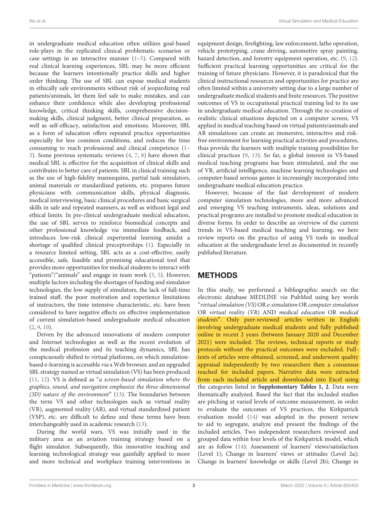
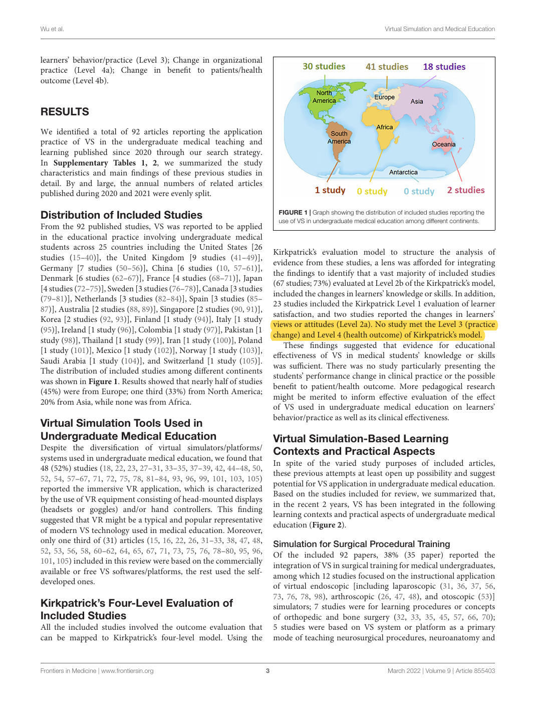
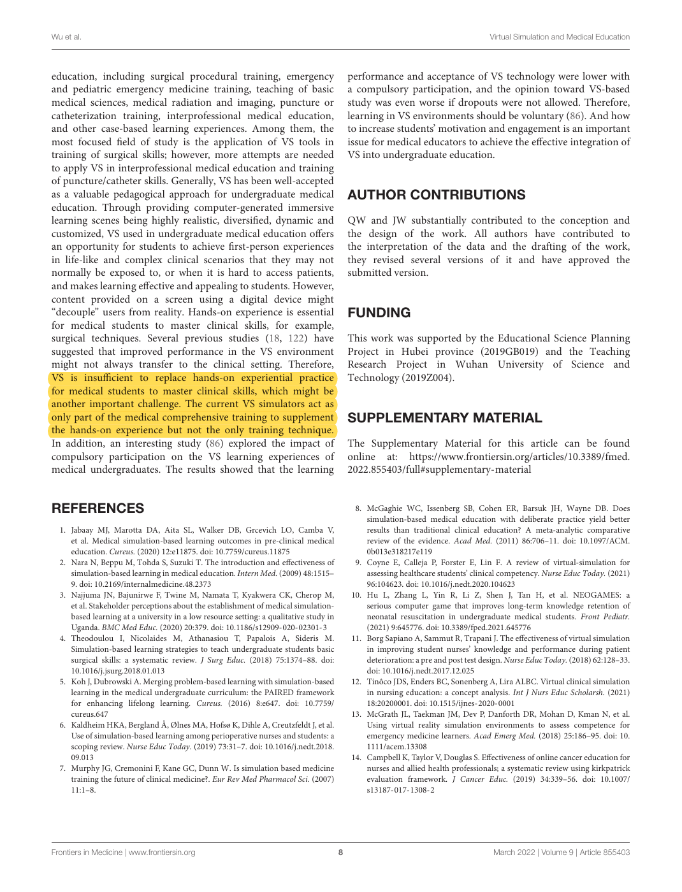

Review eligibility and independent screening
Original PDF page 2. The review covers undergraduate medicine in a limited time window.
Open marked PDF at this pageOpen unaltered PDF at this pageOpen local marked screenshotPublisher source

Qingming Wu, Yubin Wang, Lili Lu, Yong Chen, Hui Long, and Jun Wang · 2022
Frontiers in Medicine, vol. 9, article 855403
What forms of virtual simulation were used in undergraduate medical education in recent published practice, and what outcomes were evaluated?
The scoping review searched MEDLINE/PubMed for English peer-reviewed practical studies published in 2020–2021. Two researchers screened and appraised full texts. Ninety-two studies were included, covering diverse tools and tasks rather than a single conversational architecture. Outcomes were mapped to an adapted Kirkpatrick evaluation framework.
Sixty-seven studies (73%) evaluated knowledge or skills (Level 2b), while no included study measured practice change (Level 3) or health outcomes (Level 4). The review describes broad educational promise while noting that simulated gains may not transfer to clinical practice.
This is a pre-generative-LLM review of varied virtual simulations, much of it immersive VR. Its population is undergraduate medicine, not a clinical pharmacy cohort. It does not supply a pooled effect estimate proving universal improvement in communication or diagnostic reasoning. The attachment overgeneralizes those conclusions.
This paper is useful for defining what the present evaluation can establish. Faculty agreement on role and scoring decisions is a technical-validation result; a satisfaction survey describes experience. Neither is proof that students learn more, clinical practice changes, or patient safety improves. If the manuscript has very limited space, a more directly relevant pharmacy simulation review can replace this broad background source.
Introduction: one sentence situating virtual simulation in education. Discussion and limitations: distinguish technical fidelity, participant experience, learning, and clinical transfer.
This is a proposed paraphrase for our manuscript, not a quotation from the source and not a reported result of DualGraph-OSCE.
Page numbers refer to the physical pages of the unaltered publisher PDF. Yellow marks identify the cited text; the whole page is shown so its context remains visible.
Original PDF page 2. The review covers undergraduate medicine in a limited time window.

Original PDF page 3. The review distinguishes knowledge/skills from practice and health outcomes.

Original PDF page 8. The discussion explicitly limits replacement and transfer claims.
